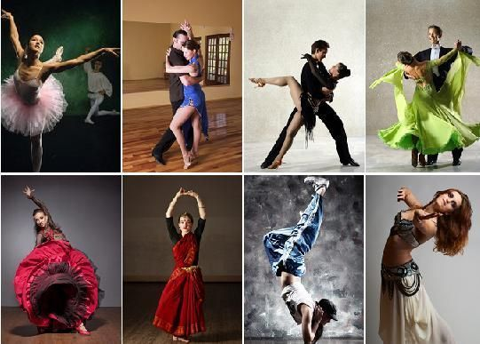

A Brief Biograhpy About Me

Favorite Hobby
One of my favorite hobbies is to dance. I had alway loved dancing since as a one year old in my diapers dancing to Shrek on the old school block televisions.
Are you interested in joining a dance class, here are well known good dance places
What I Want To Do?
One of the things that one day I want to do is travel around the world. I want to experience different cultures, foods, music, and etc. But most importantly I want to travel for my mental health and self-care.
What Is My Dream Career?
As a young child I still make to become a background dancer; to dance in music videos, live performances, etc. But I also want to become a game designer. Therefore I'm going to double major in Dance and a major that is assoicated with game design.
Created by Taisha Badden